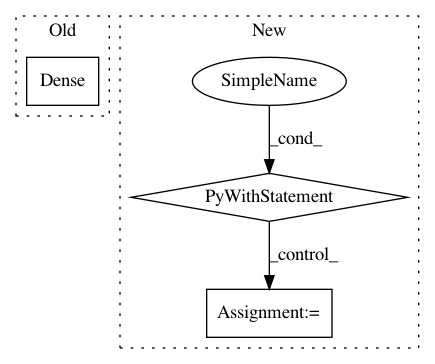

2318052dc79966bf36675606b7d992a347418292,gluoncv/model_zoo/se_resnet.py,SE_BasicBlockV2,__init__,#SE_BasicBlockV2#Any#Any#Any#Any#,175
Before Change
self.se = nn.HybridSequential(prefix="")
self.se.add(nn.Dense(channels//16, use_bias=False))
self.se.add(nn.Activation("relu"))
self.se.add(nn.Dense(channels, use_bias=False))
self.se.add(nn.Activation("sigmoid"))
if downsample:
After Change
self.features.add(nn.MaxPool2D(3, 2, 1))
in_channels = channels[0]
for i, num_layer in enumerate(layers):
stride = 1 if i == 0 else 2
self.features.add(self._make_layer(block, num_layer, channels[i+1],
stride, i+1, in_channels=in_channels,
norm_layer=norm_layer, norm_kwargs=norm_kwargs))
in_channels = channels[i+1]
self.features.add(norm_layer(**({} if norm_kwargs is None else norm_kwargs)))
self.features.add(nn.Activation("relu"))
self.features.add(nn.GlobalAvgPool2D())
self.features.add(nn.Flatten())
self.output = nn.Dense(classes, in_units=in_channels)
def _make_layer(self, block, layers, channels, stride, stage_index, in_channels=0,
norm_layer=BatchNorm, norm_kwargs=None):
layer = nn.HybridSequential(prefix="stage%d_"%stage_index)
with layer.name_scope():
layer.add(block(channels, stride, channels != in_channels, in_channels=in_channels,
In pattern: SUPERPATTERN
Frequency: 3
Non-data size: 3
Instances
Project Name: dmlc/gluon-cv
Commit Name: 2318052dc79966bf36675606b7d992a347418292
Time: 2019-01-07
Author: cheungchih@gmail.com
File Name: gluoncv/model_zoo/se_resnet.py
Class Name: SE_BasicBlockV2
Method Name: __init__
Project Name: tensorflow/models
Commit Name: 3c5330d8130ec7e03e5df28b199ab0357b559301
Time: 2019-07-24
Author: saberkun@users.noreply.github.com
File Name: official/bert/bert_models.py
Class Name: BertPretrainLayer
Method Name: build
Project Name: philipperemy/keras-tcn
Commit Name: 0cfe82c6beb9a28a5ff7da81b86fa0e93c388f14
Time: 2019-11-20
Author: premy@cogent.co.jp
File Name: tasks/save_reload_model.py
Class Name:
Method Name: